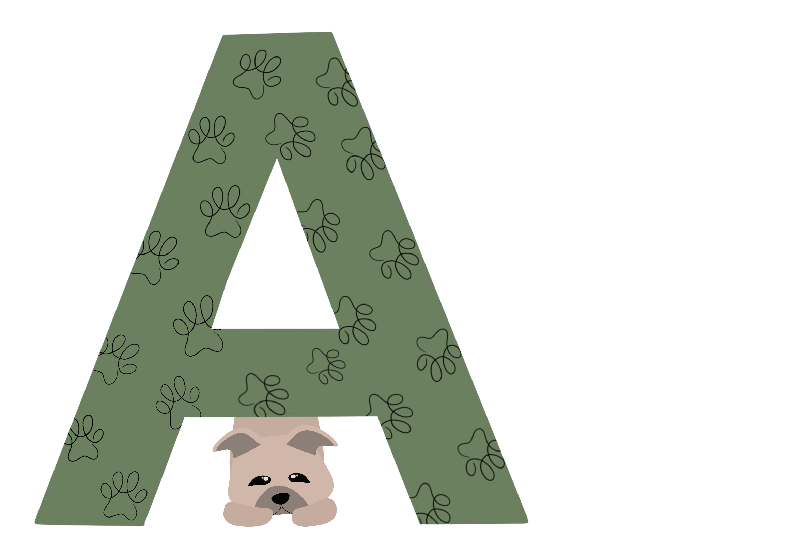

A-kuldet
Vores første kuld, kuld A, kom til verden d. 10. februar 2018, den helt igennem fantastiske mor Nova og far Oskar, der kom hele vejen fra Tyskland, fik i alt 8 sunde og raske hvalpe. Fødslen startede kl. 09.38 om morgenen og sluttede først om eftermiddagen kl. 15.09. Nova er et pragteksempel på en god hundemor, som har sat nogle livlige og målrettet hvalpe i verden.